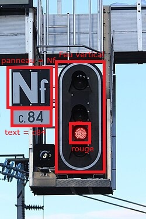
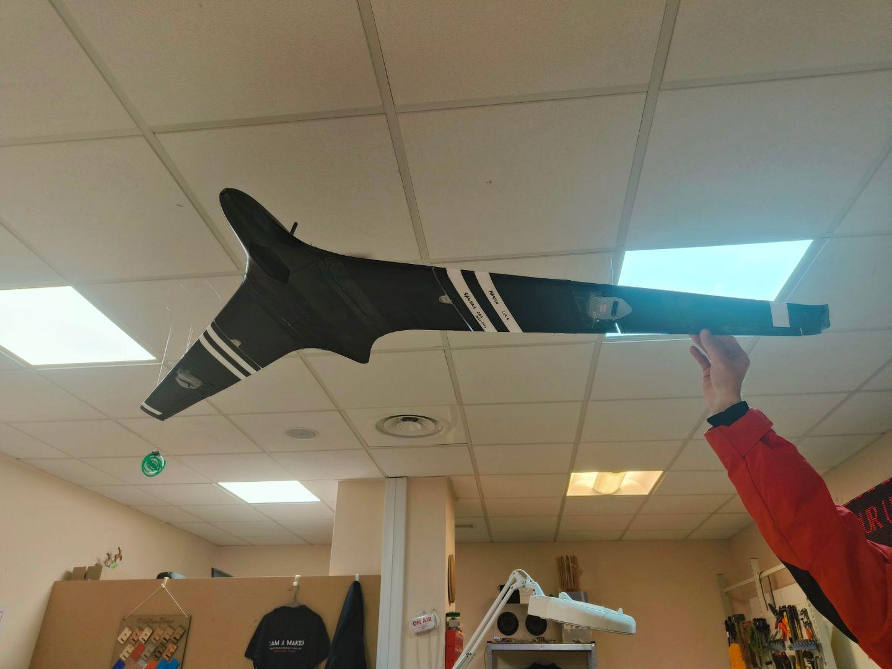
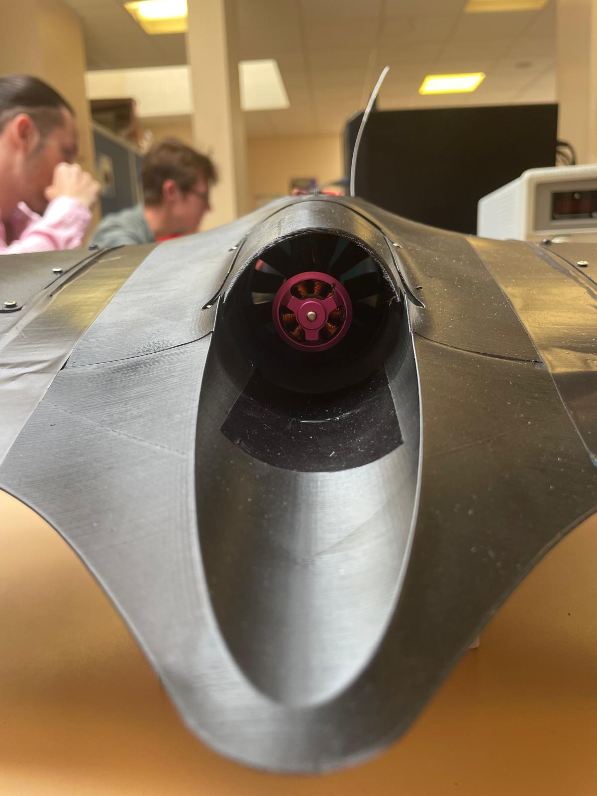
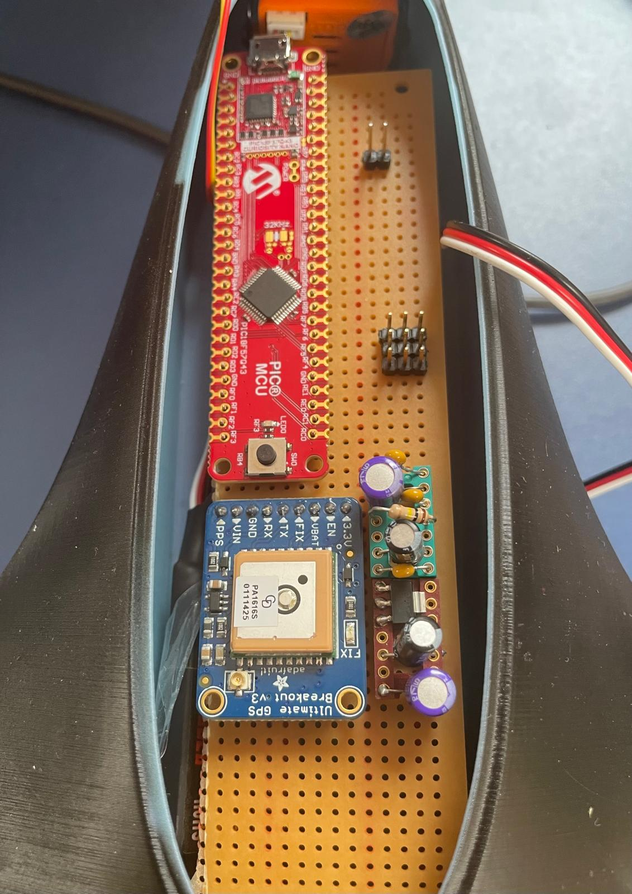
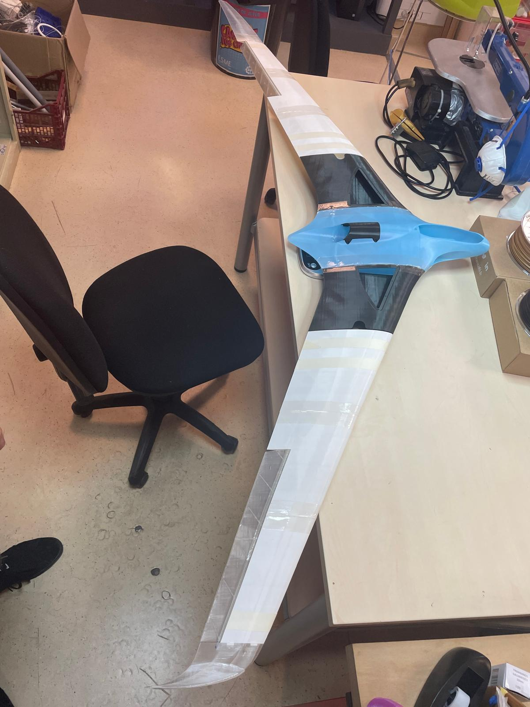
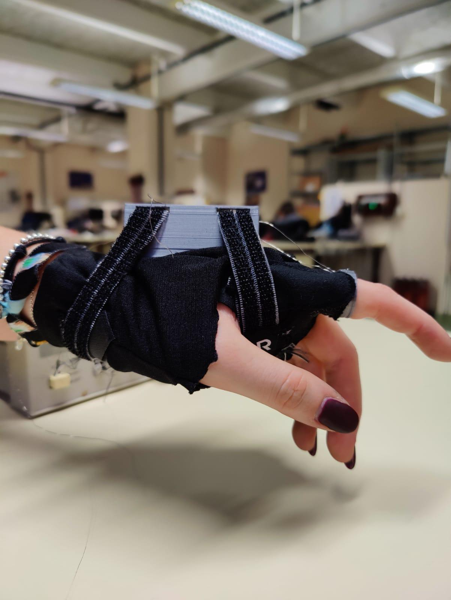

Expériences professionnelles et académiques — du prototype à la livraison.
🚆
Ferroviaire
ECM · SNCF
Machine Vision SNCF
Avant-vente et développement d'un système de vision par ordinateur
pour la SNCF. Projet remporté et livré avec satisfaction client confirmée.
PythonOpenCVNumPy
✈️
Défense
ECM · DGA / A400M
Outil embarqué A400M
Conception et prototypage d'un outil embarqué pour l'avion de transport
militaire A400M. Livraison prototype + 2 lots industriels.
SourcingÉlectroniqueC/C++
🌾
R&D
ECM · Agriculture
Outil de ferme robotique
Recherche de solutions innovantes pour un outil de ferme robotique —
biomimétisme, simulation, tests, présentation client.
BiomimétismeSimulationR&T
📄
Web
ECM · Outil Interne
Plateforme Web de Centralisation
Développement d'un site web permettant de centralisé les documentations internes.
HTML/CSSJavaScriptUI/UX
🤖
IA / ML
ECM · Outil Interne
Comparaison intelligente de PDFs
Application Python combinant Machine Vision, ML et LLMs pour
comparer des PDFs classés. Itérations jusqu'à livraison du prototype.
PythonMachine VisionLLMsML
📡
Défense
E Business Venture · MBDA
Système HUMS / Capteurs LoRa
Développement complet d'un système de monitoring embarqué (HUMS) en
milieu explosif.
C/C++ArduinoLoRaImpression 3D
👁️
Robotique
Heriot-Watt · MSc Robotics
Caméra triaxiale biomimétique
Système de montage de caméra à deux axes inspiré de l'œil humain —
mécatronique, Tracking intelligent, contrôle servo, Arduino.
C/C++MécatroniqueBiomimétique
🏥
IA / Robotique
Heriot-Watt · MSc Robotics
LLM réceptionniste Robot — Sécurité patients
Recherche publiée sur l'amélioration de la sécurité patients dans un
robot réceptionniste hospitalier basé sur un LLM.
LLMsRecherche
🚁
Académique
ESME · Projet ingénieur
Drone de détection de personnes en mer
Conception d'un drone "aile volante" autonome de détection de naufragés : vision par
ordinateur, système embarqué, électronique.
DroneVisionEmbarqué
🦾
Médical
ESME · Projet ingénieur
Orthèse de rééducation de doigt
Prototypage d'une orthèse connectée de rééducation de doigt — impression
3D, électronique, biotechnologie.
BiotechImpression 3DÉlectronique
💻
Académique
Heriot-Watt · MSc Robotics
Remote Robotic Laboratory
Projet de fin d'étude : Expérimentation avec le bras robotique NED2.
Implémentation de laboratoires robotiques à distance.
ROSPythonRobotiqueBlockyRecherche
👕
Académique
Heriot-Watt · MSc Robotics
Nao's Role in Personal Style Development
Développement d'une extension d'assistance pour les enfants daltoniens
à choisir des vêtements adaptés à la météo et à leur style personnel grâce au robot NAO.
PythonRobotiqueNAO
🚗
Automobile/Ferroviaire
ECM · SICEF
Ferromobile
Participation à la complétion du dossier de sécurité pour le projet Ferromobile,
véhicule ferroviaire innovant.
AMDECADDAR
🌱
Académique
Heriot-Watt · MSc Robotics
Système de monitoring de plante
Conception d'un système embarqué avec Arduino Uno : capteur d'humidité et de température
activant un servomoteur pour l'arrosage automatique d'une plante.
C/C++ArduinoSystème embarqué
🌐
Web
Perso · Développement
Ce site web
Développement de ce site web personnel pour présenter mon portfolio et mes projets.
HTML/CSSJavaScriptDesign
🚆
FerroviaireMachine Vision2024 — 2026
Machine Vision SNCF
Contexte
Dans le cadre de mon poste chez ECM, j'ai piloté ce projet de bout en bout :
de la phase avant-vente (rédaction des exigences et proposition technique)
jusqu'à la livraison du logiciel au client.
Ce que j'ai fait
Rédaction des exigences et élaboration de la proposition technique en avant-vente → projet remporté
Développement d'un programme de vision par ordinateur en Python (NumPy, SciPy, OpenCV)
Gestion du projet en équipe de 3 personnes : coordination, suivi jalons, relation client
Livraison finale avec satisfaction client confirmée
Stack technique
PythonOpenCVNumPySciPyVisual StudioGit
Aperçus visuels - reproduction

✈️
DéfenseEmbarqué2024 — 2026
Outil embarqué A400M
Contexte
Développement d'un outil embarqué destiné à l'avion de transport militaire A400M,
pour le compte de la Direction Générale de l'Armement (DGA).
Prototypage et développement réalisé en interne chez ECM,
production industrielle faite par un fournisseur externe.
Ce que j'ai fait
Sourcing de l'architecture matérielle selon cahier des charges technique.
STB : Specification Technique des Besoins avec le client.
Portotypage : Schéma de principe, Schéma fonctionnel
Contraintes/Normes
Normes aéronautiques
Normes de sécurité et de fiabilité pour l'embarqué militaire
Contraintes de poids, d'encombrement, de facilité d'utilisation et de montage, et de consommation énergétique
Développement d'un outil interne chez ECM pour automatiser la comparaison de documents
PDF classés, en combinant vision par ordinateur, machine learning et LLMs.
Ce que j'ai fait
Conception de l'architecture de l'application Python
Intégration de Machine Vision pour l'extraction de contenu visuel
Intégration d'un LLM pour l'analyse sémantique et la comparaison
Itérations de tests jusqu'à livraison du prototype fonctionnel
Contraintes
Gestion de documents PDF classés et sensibles
Précision et fiabilité de la comparaison de schémas mécaniques
Performance des résultats
Stack technique
PythonMachine VisionLLMsMachine LearningGitVisual Studio
📡
DéfenseEmbarqué2023
Système HUMS / Capteurs LoRa
Contexte
Stage de 3 mois chez E Business Venture — développement d'un système de monitoring d'état (HUMS) embarqué, conçu pour opérer en environnement explosif, pour MBDA.
Ce que j'ai fait
Développement logiciel embarqué complet (recherche bibliothèques → développement → tests)
Conception et réalisation du montage électronique sur base Arduino
Conception et impression 3D du boîtier de protection
Rédaction de la documentation technique complète
Recherche et qualification des capteurs LoRa adaptés aux contraintes terrain
Projet académique dans le cadre du MSc Robotics à Heriot-Watt University : conception d'un système de montage de caméra à deux axes d'orientation, inspiré du mécanisme de l'œil humain.
Ce que j'ai fait
Conception mécatronique du système de rotation biaxiale
Programmation ROS pour le contrôle des servomoteurs
Recherche publiée dans le cadre du MSc Robotics à Heriot-Watt University.
Ce projet explore comment améliorer la sécurité des patients dans un environnement hospitalier
où un robot réceptionniste motorisé par un LLM interagit avec le public.
Contribution
Création d'un dataset de questions de tests et d'échelle d'analyse
Analyse des risques liés à l'utilisation de LLMs dans un contexte médical sensible
Proposition et implémentation de garde-fous de sécurité
Rédaction et soumission d'un article scientifique publié à SEMDIAL 2024
Projet ingénieur à l'ESME : conception d'un système drone aile volante pour la détection de naufragés en mer, combinant vision embarquée et système de guidage.
Ce que j'ai fait
Conception du système de vision embarquée pour la détection humaine
Architecture électronique du drone
Définition de l'algorithme de détection et de décision
Impression 3D du drone en plusieurs modules
Stack technique
C/C++Vision par ordinateurSystèmes embarquésÉlectroniqueImpression 3D
Aperçus visuels




🦾
MédicalBiotechESME
Orthèse de rééducation de doigt
Contexte
Projet ingénieur à l'ESME dans la filière Biotechnologie : prototypage d'une orthèse pour la rééducation du doigt, combinant impression 3D, muscle en silicone, électronique et interface de contrôle.
Ce que j'ai fait
Conception et impression 3D de la structure de l'orthèse
Intégration des actionneurs (servocommandes)
Développement du système de contrôle embarqué
Tests et validation du prototype sur différentes morphologies de doigt
Stack technique
Impression 3DÉlectroniqueC/C++ArduinoBiotech
Aperçus visuels

📄
WebOutil Interne2024 — 2026
Plateforme Web de Centralisation de Documentations
Contexte
Développement d'un site web interne chez ECM pour centraliser et organiser les documentations techniques de l'entreprise, facilitant l'accès et le partage des informations entre les équipes.
Ce que j'ai fait
Conception de l'architecture du site et des pages pour une navigation intuitive
Développement front-end avec HTML/CSS et JavaScript pour une interface réactive
Structuration du contenu pour une recherche et un accès rapide aux documentations
Stack technique
HTML/CSSJavaScriptUI/UX
💻
AcadémiqueRobotique2023 — 2024
Remote Robotic Laboratory
Contexte
Projet de fin d'études dans le cadre du MSc Robotics à Heriot-Watt University : expérimentation avec le bras robotique NED2 et implémentation de laboratoires robotiques à distance, permettant aux étudiants de manipuler des robots réels via une interface en ligne.
Ce que j'ai fait
Développement de l'environnement d'expérimentation avec le bras robotique NED2
Programmation des tâches robotiques et des interfaces de contrôle
Conception de l'architecture du laboratoire à distance pour l'enseignement
Intégration de la plateforme Blockly pour la programmation visuelle du robot
NAO's Role in Personal Style Development for Colorblind Children
Contexte
Projet académique dans le cadre du MSc Robotics à Heriot-Watt University : développement d'une extension d'assistance pour le robot humanoïde NAO, afin d'aider les enfants daltoniens à choisir des vêtements adaptés à la météo et à leur style personnel.
Ce que j'ai fait
Conception de l'extension d'assistance pour le robot NAO
Développement d'algorithmes de gestion des couleurs adaptés au daltonisme
Programmation des interactions NAO avec les enfants pour des recommandations de vêtements
Intégration des données météorologiques pour des suggestions contextuelles
Participation au projet Ferromobile chez ECM, en collaboration avec SICEF. Le Ferromobile est un véhicule ferroviaire innovant combinant caractéristiques automobile et ferroviaire.
Ce que j'ai fait
Participation à la complétion du dossier de sécurité du Ferromobile
Complétion et documentation de l'AMDEC (Analyse des Modes de Défaillance, de leurs Effets et de leur Criticité)
Contribution à l'ADD (Analyse de Danger) et à l'AR (Analyse de Risques)
Méthodologie
AMDECADDARSécurité ferroviaire
🌱
AcadémiqueEmbarqué2023 — 2024
Système de monitoring de plante
Contexte
Petit projet académique réalisé à Heriot-Watt University dans le cadre du MSc Robotics. Conception d'un système embarqué complet pour la gestion automatique de l'irrigation d'une plante, avec capteur d'humidité/température et servomoteur pour l'arrosage automatique.
Ce que j'ai fait
Assemblage du circuit électronique sur Arduino Uno avec capteur d'humidité et de température
Programmation en C/C++ du comportement automatique d'arrosage en fonction des seuils d'humidité
Intégration d'un servomoteur pour activer la valve d'arrosage
Tests et calibrage du système pour assurer un arrosage approprié à la plante
Portfolio personnel construit ligne de code par ligne de code, pour présenter mon parcours, mes projets et mes compétences en systèmes, robotique et développement web. Un exercice autonome de conception et de développement web complet.
Architecture et technologie
Site statique multi-pages en HTML5 sémantique, sans framework pour garder le contrôle total sur le code
Design "from scratch" en CSS3 avec une grille custom, variables CSS et animations keyframes
Gestion de l'état et du routing par le fichier app.js en JavaScript modulaire ES6+
Modal système développé en JavaScript pur pour afficher les détails des projets
Responsive design pour compatibilité mobile, tablette et desktop
Structure et contenu
Page d'accueil (index.html) avec hero section et présentation synthétique
Page à propos (about.html) avec parcours détaillé et compétences
Page projets (projects.html) avec modaux détaillés pour chaque projet
Page formation (education.html) avec diplômes et certifications
Page ambitions (ambitions.html) et contact (contact.html)